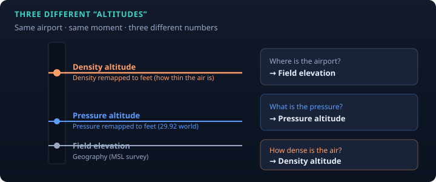
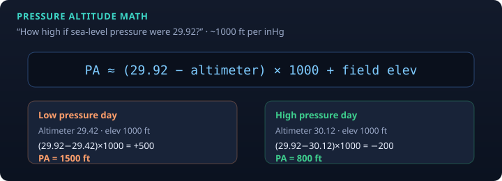
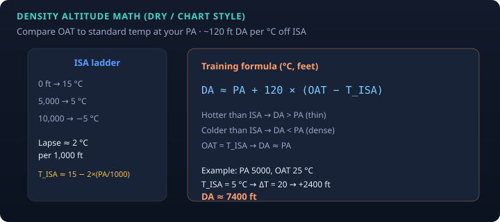
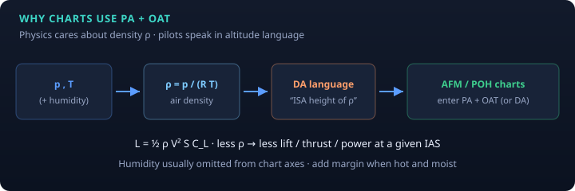

PHAK · E6B · study note
This page is about how to think about the numbers—not a substitute for the AFM/POH. Pair it with the conceptual note on density altitude & performance and the interactive Performance Lab.
Do not treat these as interchangeable labels for “how high I am.”

| Name | Question it answers | Main inputs |
|---|---|---|
| Field elevation | How high is the airport above MSL? | Survey / chart |
| Pressure altitude (PA) | How high am I if sea-level pressure were 29.92? | Altimeter + elevation (or 29.92 window) |
| Density altitude (DA) | How high does air density make the airplane feel? | PA + temperature (+ humidity in full physics) |
Sticky phrases: elevation = geography · PA = pressure remapped to feet · DA = density remapped to feet. Performance cares about density. Charts often speak PA + OAT because that encodes density under a dry ISA assumption.
Cockpit formula (altimeter in inHg, result in feet):
PA ≈ (29.92 − altimeter setting) × 1000 + field elevation

What you are really doing: mapping “local static pressure at the field” onto the standard atmosphere pressure profile. By definition, ambient pressure equals ISA pressure at that PA.
The International Standard Atmosphere is the reference ruler for both PA and DA.
| Quantity | Sea level | Lower troposphere lapse (approx.) |
|---|---|---|
| Pressure | 29.92 inHg | decreases with height |
| Temperature | 15 °C / 59 °F | ≈ −2 °C / 1000 ft |
| Density | standard ρ₀ | decreases with height |
Standard temp at a given PA (°C):
T_ISA ≈ 15 − 2 × (PA_ft / 1000)
Example: PA = 5000 ft → T_ISA ≈ 5 °C. On a standard day at that PA, DA ≈ PA. Hotter than ISA → DA > PA; colder → DA < PA.
Common training approximation (OAT and T_ISA in °C):
DA ≈ PA + 120 × (OAT − T_ISA)

Worked example
E6Bs and many apps implement this dry path (or a close ISA density inversion). It is approximate—good for intuition and planning order-of-magnitude, not a law of nature.
Dry air density:
ρ = p / (R × T)
Humidity: water vapor is lighter than dry air, so for the same p and T, moist air is less dense → slightly higher DA. Full models use vapor pressure and virtual temperature. Pilot charts usually ignore humidity on the axes; treat it as a small add-on or margin (see density altitude note).

Lift (and related forces) scale with dynamic pressure:
L = ½ ρ V² S C_L
Lower ρ → less lift / thrust / power for a given indicated speed and configuration. Publishing charts vs raw ρ would be awkward; PA and OAT are the pilot-friendly encoding.
| Number / instrument | Driven mainly by |
|---|---|
| Altimeter (local setting) | Pressure |
| True airspeed for a given IAS | Density (and compressibility at high M) |
| Takeoff / climb performance | Density (+ weight, wind, runway…) |
Hot day, same field and altimeter setting: indicated altitude still “looks right” for traffic, but DA is high and the airplane is weak.
| Model | Idea |
|---|---|
| PHAK | Humidity contributes; usually not essential for the calc; no simple cockpit chart |
| FAASTeam-style | High humidity → consider ~+10% takeoff distance, expect weaker climb (margin) |
| Dew-point ROT (study) | ~20 × dew point (°C) feet added to dry DA — rough, often conservative-ish |
| Full calculator | Station pressure + T + dew point → humidity-aware DA |
| Idea | Phrase |
|---|---|
| PA | “Altitude as if sea-level pressure were 29.92.” |
| inHg rule | “About 1000 feet per inch of mercury.” |
| ISA lapse | “Two degrees colder per thousand feet.” |
| DA dry | “PA plus 120 feet for every °C hotter than standard.” |
| DA meaning | “The ISA height with today’s density.” |
| Humidity | “Moist air is lighter; usually hundreds of feet; often margin, not a chart axis.” |
| Charts | “PA and OAT are how the POH speaks density.” |
Open Aircraft Performance Lab → Density altitude note
Figures are original educational SVGs, not FAA handbook scans.